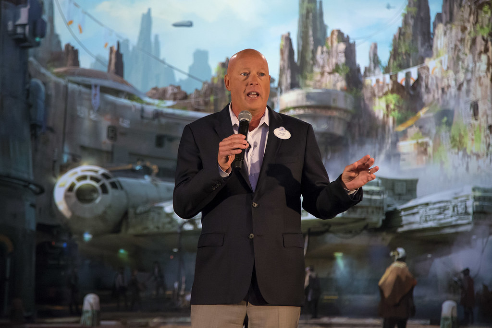
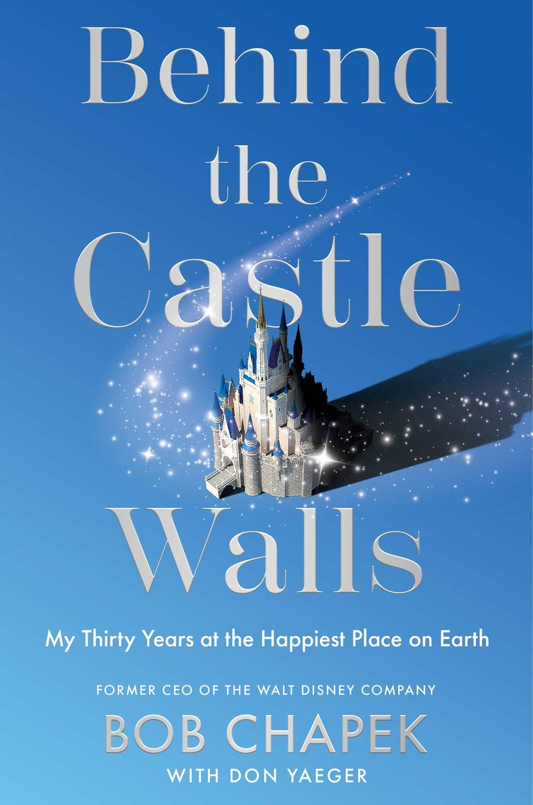

Thirty years · One castle
Robert A. Chapek spent 29 years inside The Walt Disney Company, from marketing director for home video in 1993 to Chief Executive Officer from February 2020 to November 2022. He built theme parks on three continents, made Disney the world's largest licensor of intellectual property, and steered the company through the only period in its history when it had to close almost all of itself.

Career progression
Home video → consumer products → parks → the corner office. Tap any milestone to open it.
A kid from Robertsdale, the Hammond, Indiana neighbourhood beside the Whiting oil refinery where his father worked, arrives at IU behind his classmates and has to catch up alone. He has called it his first lesson in grit. He also met his future wife, Cynthia, on his second day on campus, and watched Breaking Away being filmed around him: his first look at how a production actually gets made.
Before he ever sold a Disney product he learned to sell ketchup. Packaged goods and agency work gave him the discipline that would later define him: know the consumer, know the margin, and don't confuse the two.
The VHS era. Michael Eisner later said of him: "He was always an executive that you knew would be on the rise… He knew how to grow the business while adjusting to the changing marketplace, which was intense."
He carried Disney's home entertainment business from tape to DVD to Blu-ray, the sort of format transition that has killed other companies. His rise from the home video division to the top of the company has been called the home entertainment industry's single biggest success story.
After the Lucasfilm acquisition he folded Star Wars into Disney's licensing machine and made Disney the largest licensor of intellectual property on earth. In 2013 he closed a Hasbro deal worth $80M in Marvel royalties plus up to $225M for Star Wars rights. In 2014 he launched Disney Imagicademy, the company's first real move into children's learning apps, prompted, he said, by parents telling his team that good ones were impossible to find.
Handed the biggest capital budget in entertainment. Over his tenure he invested more than $24 billion into parks, attractions, hotels and ships. That is more, the New York Times noted, than Disney paid for Pixar, Marvel and Lucasfilm combined.
The project that made his reputation with the board. Bob Iger travelled to Shanghai with him more than ten times, watching how he handled budget overruns and construction delays. It opened. It worked.
Two of the most ambitious themed lands ever built. Disney called Galaxy's Edge "the most immersive land we have ever built": roughly $1 billion for 14 acres in Anaheim. In 2018 he was also given back consumer products, creating Disney Parks, Experiences and Products, and with it the clearest signal yet that he was next in line.
Named by Bob Iger as his hand-picked successor. Three days in, COVID-19 forced his first major decision: close what he later described as roughly 80% of the company's operating businesses. "That was very difficult, because that was something that was unprecedented, unheard of."
Shanghai reopened first, capped at 24,000 guests a day — "a baby step," he called it. Walt Disney World followed with masks and temperature checks. Disneyland became a mass vaccination site, a decision he framed with characteristic plainness: "If there's one thing we do, it's handle large numbers of people… It was just the right thing to do." Meanwhile Mulan and Soul went straight to Disney+, and the streaming era began in earnest.
Chapek initially declined to take a public position on Florida's Parental Rights in Education Act, arguing in a board-approved memo that "corporate statements do very little to change outcomes or minds… they can be counterproductive." The backlash from Disney's own creative community was severe. He reversed course, apologised, paused Florida political donations and pledged support to LGBTQ+ organisations, but the episode set off the Reedy Creek fight and defined the year. By then, parks, experiences and products revenue had more than doubled to $6.7B in the first quarter of 2022.
A weekend. A phone call. Iger back in the chair. CNBC later reported that Iger had repeatedly failed to champion the successor he chose, keeping his office and calling himself "Big Bob." The board pointed to the November earnings report. Chapek has spent four years deciding what he thinks happened. The answer is the book.
He joined the board of the medical technology company in January 2024, during one of the most closely watched governance fights in med-tech, and stepped off the board in 2025.
272 pages, written with New York Times bestselling author Don Yaeger. His side, in his words, after four years of what the publisher calls "reflection and distance."
The man
"Pick a North Star and make sure that's the highest value you have. When the noise comes in and there's a lot of different signals and inputs and you have to make a decision, you have to think about what your North Star is." In the parks, it was exceeding guest expectations, and everything else became easier to decide.
He is one of very few entertainment CEOs with a microbiology degree. He credits an arts-and-sciences education with the "elasticity" a media career demands, and it shows in how he reasons: hypothesis, data, iterate.
His family drove to Walt Disney World every year when he was a boy. He didn't arrive at Disney as a strategist studying a brand; he arrived as someone who had stood in its queues.
He met Cynthia on his second day at Indiana University. Three children, including Marvel Studios producer Brian Chapek, and four grandchildren. They live in Westlake Village, California.
Father: a WWII veteran and machinist at the oil refinery in Whiting. Mother: an insurance agency in East Chicago. He was an altar boy at St. John the Baptist. "You get what you earn in the Region, and you don't expect anything beyond what it is that you work hard for."
He walked past the filming of Breaking Away on his way to class at IU and couldn't believe how big and complicated a production was. "Maybe in some ways that was what wet my whistle for what I eventually do now."
Things you probably didn't know
He graduated from George Rogers Clark Jr./Sr. High School in Hammond in 1977, as did his entire family.
Asked which attraction he'd visit first when Walt Disney World reopened in 2020, he named Pirates of the Caribbean.
Not through a movie: through consumer products, by integrating Star Wars into Disney's licensing engine after the Lucasfilm deal.
His parks capital programme outspent Disney's three defining acquisitions combined.
In 2019 he put 25 mini Disney Store shop-in-shops inside Target stores, roughly 750 sq ft each and 450+ items, because Disney shoppers were already there.
Disney's first serious learning-app suite existed because parents told his team that finding good ones was impossible.
"He was always an executive that you knew would be on the rise." — Michael Eisner
Iger accompanied him on more than ten trips to the Shanghai build, an unusually long audition for the top job.
Disneyland became one of California's largest vaccination sites because, as he put it, moving enormous numbers of people through a process is literally what Disney does.
The memoir's own blurb says the experience left him "to wonder whether he had become the scapegoat in it all." Few CEO books open with a question that honest.
The memoir
My Thirty Years at the Happiest Place on Earth — with Don Yaeger · Gallery Books (Simon & Schuster)

Within weeks of his becoming CEO, the pandemic shut down parks, movie theatres and cruise ships, forcing Chapek to steer the empire through unprecedented times. "The stakes were high, the decisions unforgiving, and the backlash often inordinate." In 2022 he was out and his former boss was back in. Four years later, with reflection and distance, he goes behind the scenes of one of the most recognisable — and most reticent — companies on earth.
"A revealing and thrilling story of ambition, power and the price of Disney magic." — Gallery Books
until publication — September 29, 2026
Launch kit · ready to copy & paste
Drafted for Bob to use as-is or edit. The rule we wrote to: sound like the man who ran the place, not a man selling a book. One tap copies a post.
Advisory fit
An operator who ran a parks business past 150 million visits a year, meeting a company teaching AI agents to do real work. Here's the honest exchange rate.